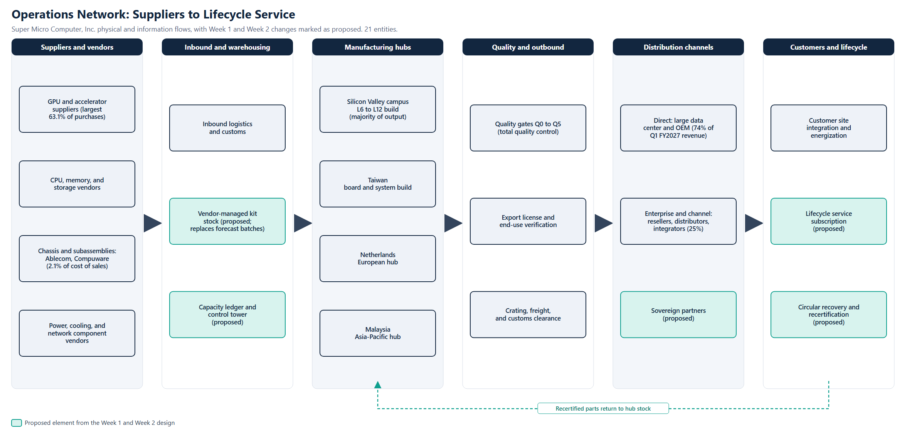
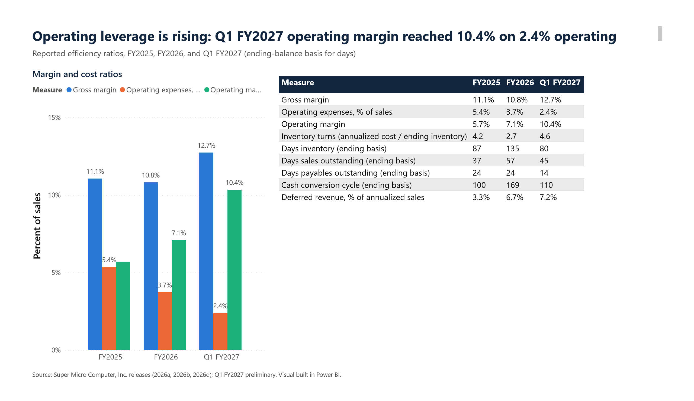
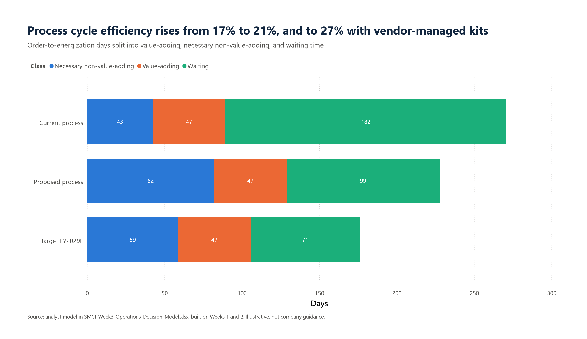
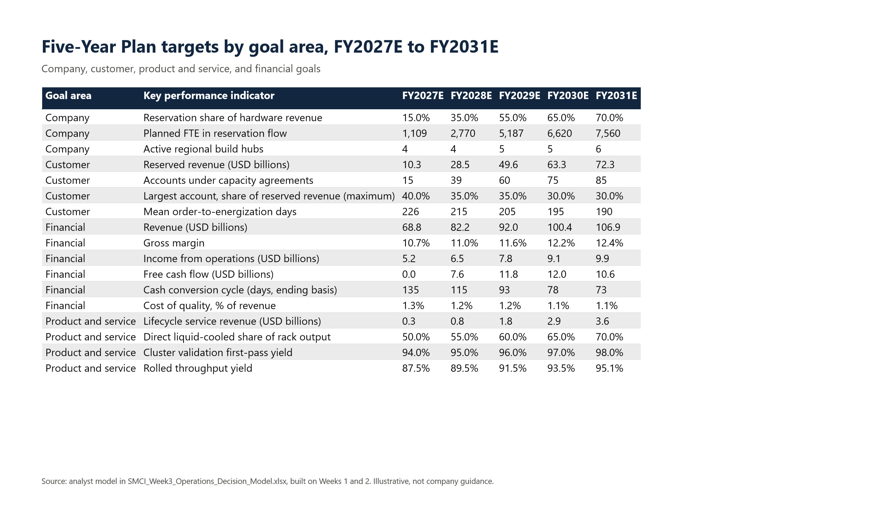
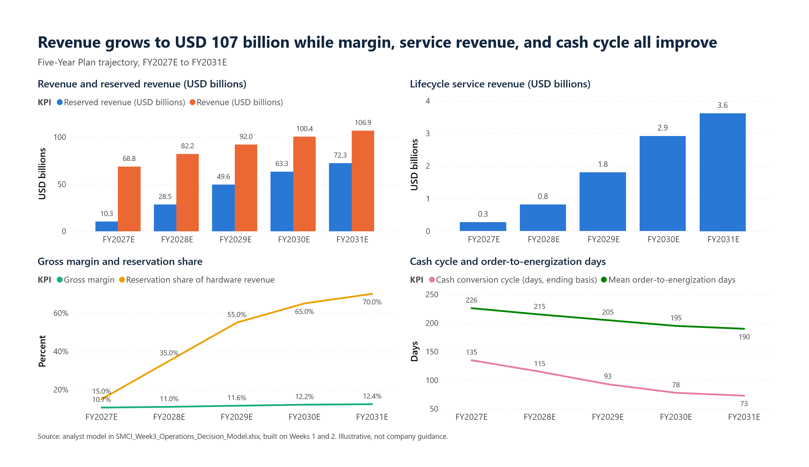

Operation Analysis
Operational Processes

Technical interpretation. The operations network follows supplier inputs, production, warehousing, shipping, distribution, and site commissioning before entry into lifecycle services. Reservation-led procurement and site qualification are proposed process improvements.
Suppliers and vendors. GPU and accelerator suppliers anchor the bill of materials, and a single supplier represented 63.1% of FY2026 purchases (Super Micro Computer, Inc., 2026a). CPU, memory, storage, power, cooling, and network vendors supply the remaining components. Related parties Ablecom Technology and Compuware Technology provide chassis and subassemblies, at 2.1% of FY2026 cost of sales (Super Micro Computer, Inc., 2026a). Management reported that component shortages and volatile pricing continue to affect delivery timelines (The Motley Fool, 2026b).
Manufacturing. Supermicro manufactures the majority of systems at the Silicon Valley headquarters campus, with assembly, test, and quality control also performed in Taiwan, the Netherlands, and Malaysia under ISO-certified quality systems (Super Micro Computer, Inc., 2026a). Production runs from board level through system and rack integration to cluster-level validation. Rack capacity was expected to exceed 8,000 racks per month by December 2026, including more than 4,000 direct liquid-cooled racks (The Motley Fool, 2026b).
Warehousing. Inventory reached USD 15.1 billion at September 30, 2026 (Super Micro Computer, Inc., 2026d). Company-reported days of inventory fell from 119 to 74 in one quarter, against a long-term target of 50 days (The Motley Fool, 2026b). The proposed model replaces forecast-driven batch buying with vendor-managed kits drawn against a capacity ledger.
Shipping. Racks ship fully integrated in shock- and vibration-tested crates, ready to power on at arrival (HPCwire, 2026). Foreign shipments add export licensing and customs clearance, which the proposed model handles through the verified end-use gate and regional hubs.
Distribution and retailing. Supermicro does not retail to consumers. Large data center and OEM customers bought directly and represented 74% of first-quarter FY2027 revenue, while enterprise and channel customers, served through resellers, distributors, and system integrators, represented 25% (The Motley Fool, 2026b). By region, the United States represented 80% of revenue, Europe 11%, Asia 6%, and the rest of the world 3%. The proposed model adds sovereign partner channels and lifecycle service relationships after delivery.
Operating Efficiency

Technical interpretation. Operating expenses as a share of sales fell to 2.39% in Q1 FY2027. Inventory turns recovered to 4.6, while days payable fell to 14. Working capital remains the principal operating constraint.
| Measure | FY2025 | FY2026 | Q1 FY2027 |
|---|---|---|---|
| Gross margin | 11.1% | 10.8% | 12.7% |
| Operating expenses, % of sales | 5.36% | 3.73% | 2.39% |
| Operating margin | 5.7% | 7.1% | 10.4% |
| Inventory turns (annualized) | 4.2 | 2.7 | 4.6 |
| Days sales outstanding (ending basis) | 37 | 57 | 45 |
| Days payables outstanding (ending basis) | 24 | 24 | 14 |
| Deferred revenue, % of annualized sales | 3.3% | 6.7% | 7.2% |
Analysis. Overhead efficiency is strong and improving. Operating expenses fell from 5.4% to 2.4% of sales, and revenue per employee reached approximately USD 5.6 million in FY2026. Working capital efficiency is the weak link. Inventory turns fell to 2.7 in FY2026 before recovering to 4.6, and payables fell to 14 days in the first quarter of FY2027, so suppliers fund less of the build than before. Rising deferred revenue shows customers funding more of the build, which the proposed reservation model formalizes.

Analysis. Process cycle efficiency, the share of lead time spent on value-adding work, rises from 17.2% under the current process to 20.5% under the proposed process. The same 47 days of value-adding work (blueprint, build, and integration) occur in both. The gain comes from removing waiting time: forecast buying, supply waits, and finished-goods holds fall from 182 days to 99 days. Vendor-managed kits, standard capacity agreements, and site readiness work run in parallel with kit lead time, which raises efficiency to 26.5% by FY2029E.
Five-Year Plan, FY2027E to FY2031E
Primary company goals. Convert 70% of hardware revenue to reservation-backed capacity by FY2031E, expand from four to six active regional build hubs, and staff the reservation flow to approximately 7,600 positions through certified technician programs.
Customer goals. Grow reserved revenue from USD 10.3 billion to USD 72.3 billion and accounts under capacity agreements from 15 to 85. Reduce the maximum single-account share from 40% to 30%, and cut mean order-to-energization time from 226 days to 190 days.
Product and service goals. Raise direct liquid-cooled output from 50% to 70% of racks, lift cluster validation first-pass yield from 94% to 98% and rolled throughput yield to 95.1%, and grow lifecycle service revenue from USD 0.3 billion to USD 3.6 billion.
Financial goals. Deliver revenue of USD 106.9 billion and gross margin of 12.4% by FY2031E, sustain free cash flow above USD 10 billion from FY2029E, shorten the cash conversion cycle to 73 days, and reduce cost of quality from 1.30% to 1.05% of revenue. Financial targets carry the Week 1 proposed-model values. Updated FY2027 guidance of USD 72 billion to USD 82 billion exceeds the FY2027E revenue target, so the plan is conservative at the start (Super Micro Computer, Inc., 2026d).

Technical interpretation. The Five-Year Plan specifies seventeen performance indicators across company, customer, product and service, and financial goals. The target schedule is reproduced as an accessible data table immediately below the figure.
| Goal area | Key performance indicator | FY2027E | FY2028E | FY2029E | FY2030E | FY2031E |
|---|---|---|---|---|---|---|
| Company | Reservation share of hardware revenue | 15% | 35% | 55% | 65% | 70% |
| Company | Planned FTE in reservation flow | 1,109 | 2,770 | 5,187 | 6,620 | 7,560 |
| Company | Active regional build hubs | 4 | 4 | 5 | 5 | 6 |
| Customer | Reserved revenue (USD billions) | 10.3 | 28.5 | 49.6 | 63.3 | 72.3 |
| Customer | Accounts under capacity agreements | 15 | 39 | 60 | 75 | 85 |
| Customer | Largest account share (maximum) | 40% | 35% | 35% | 30% | 30% |
| Customer | Mean order-to-energization days | 226 | 215 | 205 | 195 | 190 |
| Product and service | Lifecycle service revenue (USD billions) | 0.3 | 0.8 | 1.8 | 2.9 | 3.6 |
| Product and service | Liquid-cooled share of rack output | 50% | 55% | 60% | 65% | 70% |
| Product and service | Cluster validation first-pass yield | 94% | 95% | 96% | 97% | 98% |
| Product and service | Rolled throughput yield | 87.5% | 89.5% | 91.5% | 93.5% | 95.1% |
| Financial | Revenue (USD billions) | 68.8 | 82.2 | 92.0 | 100.4 | 106.9 |
| Financial | Gross margin | 10.7% | 11.0% | 11.6% | 12.2% | 12.4% |
| Financial | Income from operations (USD billions) | 5.2 | 6.5 | 7.8 | 9.1 | 9.9 |
| Financial | Free cash flow (USD billions) | 0.0 | 7.6 | 11.8 | 12.0 | 10.6 |
| Financial | Cash conversion cycle (days) | 135 | 115 | 93 | 78 | 73 |
| Financial | Cost of quality, % of revenue | 1.25% | 1.20% | 1.15% | 1.10% | 1.05% |

Technical interpretation. Five-year trajectories model revenue growth, lifecycle services, margin development, reservations, and declining process cycle duration across FY2027E–FY2031E.